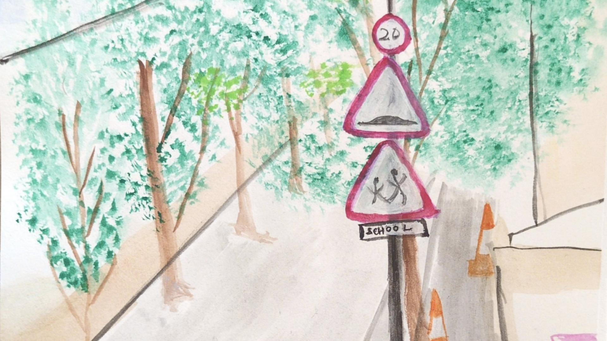

Diary Saha
'Diary' Saha passed away today. I am one of the handful of people who always had mixed feelings about him but his influence on how I viewed radio, music, and Tamil lyrics is undeniable…
Things that became a part of me
when I wasn't looking.
Those who linger, mostly people
'Diary' Saha passed away today. I am one of the handful of people who always had mixed feelings about him but his influence on how I viewed radio, music, and Tamil lyrics is undeniable…
She was my சித்தி (Chitthi) - a word that describes "mother's sister" in a way that "aunt" never quite captures. She was a second maternal figure in my life, even during the times I didn't fully understand what that meant…
Sought, savoured, and survived.
What do you do when you fall in love so much with the opening act that you are worried the main event is not going to hold up? I am in Iceland for 24 hours, en route to North America, for the first time in my life…
I've come to love reading on the train. It was an acquired taste for a woman, the indulgence in one's imagination, the temerity to get lost in another world in a public place…
The kind of love that says "Let me hold your bag while you warm your hands" on a cold winter day. To be permeable to wonder…
I walk around the temple, praying to every deity, asking them to help me deny this dread. If ever I needed proof that miracles could happen, it would be now…
Leaving the gray skies of England behind, we arrived at the land of mint tea, zellige, and congregation of cats. Morocco is now officially our annual destination for some December sun…
The price of becoming.
I hate that you turned my imperfect chords into something beautiful - you said you'd teach me how to and never did…
I imagined having this conversation with you by the footbridge near the Crossharbour station - the one that I always stop by for a few seconds before heading to you…
I am waiting for you to flinch. Tell me this was all in my head - that I read the room wrong, or that I was in the wrong room in the first place…
I've walked this route 6 times now. I get off the train, through the station, and look up at this building. It's not too old, not too new, not ornate, not soulless. Just a few of the windows are lit with the right shade of amber and I take a picture…
12:43 am, the corner of my room with the record player. I am practicing a small riff from Michael Jackson's underrated (if there could be one) track 'Give In to Me' on my second-hand Electric Blue Korean Ibanez. I want to perfect it. Enough that it keeps me up at night…
The world as I see it



Everything, in order.
When I Wasn't Looking is a digital notebook of observations, memories, and midnight thoughts.
Written and curated by VS Manian.
{kind=link}
{kind=link}